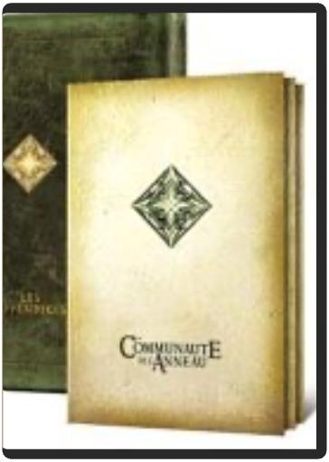
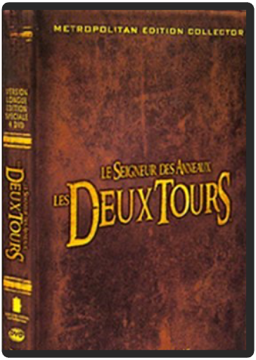

Hayao Miyazaki n’a rien à prouver à personne. Ce maître de l’animation, technicien hors pair, fluidifie à l’extrême sa mise en scène, tout en distillant sa vision du monde. Modeste et généreux, l’homme livre son conte féerique comme une main tendue. Sans perdre son temps à s’émerveiller du merveilleux, Miyazaki décrit un univers réaliste où le féerique aurait sa place naturelle pour aborder une histoire malicieuse sur la vieillesse du corps et la jeunesse du cœur. Récit merveilleux qui mêle pamphlet antimilitariste et fable pour adultes, Le Château ambulant est une expérience à vivre absolument. - www.ecranlarge.com  Sorti en salles après les chefs-d'œuvre Princesse Mononoké et Le Voyage de Chihiro bien qu'il ait été réalisé plus de dix ans auparavant, Le Château dans le ciel développe déjà les grands thèmes qui sous-tendent les opus suivants. Inspiré par Jonathan Swift, cette histoire d'enfants à la recherche d'une île cachée au cœur des nuages se double d'un message écologique puissant qui renvoie à la catastrophe de Hiroshima. D'un point de vue plastique, le film surprend, par le contraste du dessin des personnages, assez rétros, qui évoluent dans des décors incroyablement fouillés, comme dans les meilleurs des films de science-fiction. Notons que l'on retrouve des éléments imaginaires voisins dans quelques bandes dessinées européennes, notamment chez le Français Fred (Philémon et le château suspendu). Côté bonus, les storyboards sont passionnants et complétés par les bandes-annonces japonaises. —Hervé Comte  Amélie Poulain a une idée fixe en tête : rendre les gens heureux. De ses voisins à ses collègues et clients du petit café de Montmartre où elle est serveuse, tout le monde voit un jour sa vie bouleversée par cette jeune fille malicieuse, jusqu'au moment où elle tombe amoureuse d'un employé de sex-shop, collectionneur de photomatons abandonnés. Mais dans l'univers d'Amélie, rien n'est simple. Une image toujours aussi éblouissante, à laquelle Jean-Pierre Jeunet nous avait pourtant habitués, qui sert un récit magique et revigorant, telle est la trame d'un film surprenant, au succès planétaire, un raz de marée qui n'en finit pas de déverser bonheur et amour avec, en toile de fond, un Paris rêvé, un Montmartre idéal habité d'acteurs judicieusement employés, d'Audrey Tautou à Mathieu Kassovitz en passant par l'émouvant Jamel Debbouze ou le fidèle Dominique Pinon. Un grand DVD pour un grand film, succès surprise de l'année 2001. —David Rault  Hogarth Hughes just rescued an enormous robot that fell from the stars to Earth. Now young Hogarth has one very big friend and an even bigger problem: how do you keep a 50-foot-tall, steel-eating giant a secret? |  le seigneur des anneaux 1 : la communauté de l'anneau - édition spéciale, version longuepeter jackson Grandiose. Magnifique. Captivant. Magique. Les mots manquent pour qualifier cette brillante adaptation cinématographique d'un des plus grands romans d'héroïc fantasy. Le Seigneur des Anneaux est un film-fleuve racontant l'épopée d'un jeune hobbit détenant un anneau aux pouvoirs très puissants, convoité par Sauron, seigneur des ténèbres qui se verrait bien dominer le monde grâce à celui-ci. Cette lutte entre le bien et le mal est illustrée avec maestria par Peter Jackson, fan du roman de J.R.R. Tolkien depuis toujours. La force des émotions partagées par des personnages attachants, courageux et valeureux, et l'horreur dégagée par les ennemis destructeurs s'allient à des décors et effets spéciaux impressionnants et jamais vus au cinéma. Une telle richesse d'images demande plusieurs visions pour découvrir tous les aspects du monde enchanté de Peter Jackson. Aventure, guerre, suspense, fantastique, amour, humour. Tout est là pour faire du Seigneur des Anneaux un très grand moment de cinéma. —Marc Maesen  le seigneur des anneaux 2 : les deux tours - édition spéciale, version longuepeter jackson La communauté s'est brisée : perdus dans les collines d'Emyn Muil, Frodon et Sam, suivis par l'étrange Gollum, cherchent la Porte Noire du Mordor, tandis qu'Aragorn, Legolas et Gimli traversent la Terre du Milieu vers le Rohan, le royaume assiégé du roi Théoden. Le peuple de Théoden est en danger, et le temps presse : inspiré par Gandalf, revenu des enfers sous la forme de Gandalf le Blanc, Aragorn décide de mener les gens du Rohan vers le Gouffre d'Helm où ils seront, il en est persuadé, hors de portée des griffes de Saroumane et de sa démoniaque armée Deuxième volet de la saga épique réalisée par Peter Jackson, tirée du roman culte de J.R.R. Tolkien, Les Deux Tours nous emporte encore un peu plus loin dans un monde fantastique, un univers éblouissant foisonnant de détails, sur les pas de héros de légende aux aventures inoubliables. Libéré des obligations d'introduction à l'histoire, qui représentaient une large partie du premier épisode, Peter Jackson nous plonge d'entrée de jeu dans la course et la bataille, pour un épisode plus brutal, plus âpre et plus sombre que La Communauté de l'Anneau : chacun en aura pour son compte, et surtout les amateurs de poussées d'adrénaline. Les rebondissements sont nombreux et les scènes de combat sont titanesques à souhait avec, en point d'orgue, la grandiose bataille du gouffre d'Helm, où des dizaines de milliers d'Orques bavants et d'Uruk-Hais hurlants se lancent à l'assaut des elfes et des humains, réunis pour combattre le Mal. C'est également dans cet épisode tant attendu par les fans de la série qu'apparaît Gollum, le Hobbit corrompu par l'Anneau, entièrement conçu en images de synthèse d'après le jeu de l'acteur Andy Serkis, et dont les performances sont tout simplement extraordinaires. Cette édition 4 DVD comblera incontestablement l'appétence de tous les fans de la série. Songez : une version du film rallongée d'une demi-heure, tenant du coup désormais sur deux DVD, complétées notamment par un commentaire audio du toujours passionnant Peter Jackson. Et deux galettes intégralement consacrées aux bonus, parmi lesquels un court-métrage réalisé par l'acteur Sean Astin, et 6 heures (!) de révélations inédites sur l'histoire et les fondations de la Terre du Milieu. De quoi passer près de 10 heures au total devant votre écran pour tout connaître – ou presque – des arcanes d'une trilogie qui figure d'ores et déjà parmi les plus célèbres de l'histoire du cinéma —David Rault  Les troupes de Saroumane vaincues, celles de Sauron ont redoublé d’intensité dans leur lutte contre Gandalf et ses compagnons. Sous les ordres du courageux Aragorn, une poignée de soldats s’apprêtent à livrer une ultime bataille… Vous l’attendiez, le voilà : la luxueuse sortie DVD en version longue du multi-oscarisé Retour du Roi. Une édition spéciale contenant 50 minutes supplémentaires (dont le combat légendaire entre Gandalf et Saroumane) et une foison de bonus, ce qui ravira avant tout les millions de fans et exégètes de l’univers de Tolkien. Parmi les bonus, on retiendra quatre commentaires différents (réalisateurs et scénaristes, comédiens, équipe artistique, équipe de tournage…), plusieurs documentaires, des milliers de dessins et de photographies… un DVD monumental ! Jean-Pascal Grosso |

Julien
Collection Total:
2 100 Items
2 100 Items
Last Updated:
Feb 15, 2025
Feb 15, 2025


 Made with Delicious Library
Made with Delicious Library